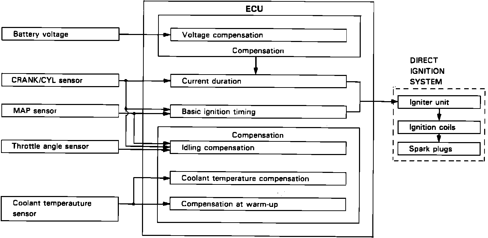
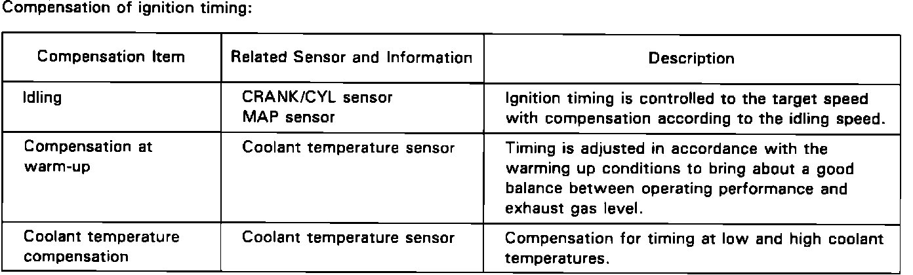
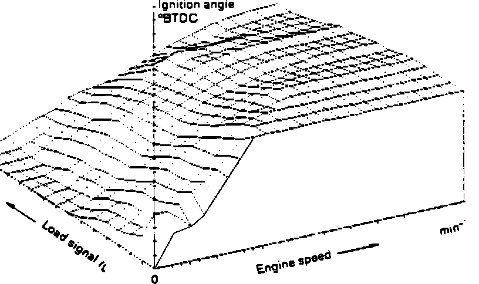

Ignition System: Description and Operation
A high voltage pulse created in the ignition coil flows to the spark plug, where it must jump a gap to reach engine ground. When the voltage pulse jumps the gap to ground, it creates a spark (ignition spark) strong enough to ignite the air/fuel mixture in the combustion chamber.Ignition System Description:

Ignition System Description:

The programmed ignition (PGM-IG) used in this engine provides optimum control of ignition timing by using a microcomputer (ECU) that processes input signals from the TDC/CRANK sensor, throttle angle sensor, coolant temperature sensor and MAP sensor to determine the correct ignition timing at any given driving condition.
The ECU sends voltage pulses to the igniter unit to trigger the ignition spark.
The Ignition System has two major functions:
CONTROL AT START
Ignition timing is fixed at 15° BTDC for cranking. The cranking is detected by the TDC/CRANK sensor (cranking revolution) and starter signal.
Typical Ignition Map:

IGNITION TIMING CONTROL
The ECU has, stored within it, complicated "ignition maps" to determine the correct ignition timing depending on engine speed and intake manifold vacuum pressure. Engine speed and vacuum pressure are calculated from the various input devices.
This system, not dependent on a governor or vacuum diaphragm, is capable of setting the timing with more accuracy than a conventional system with governors or diaphragms.